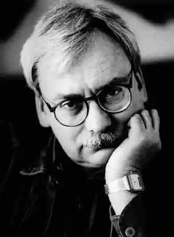
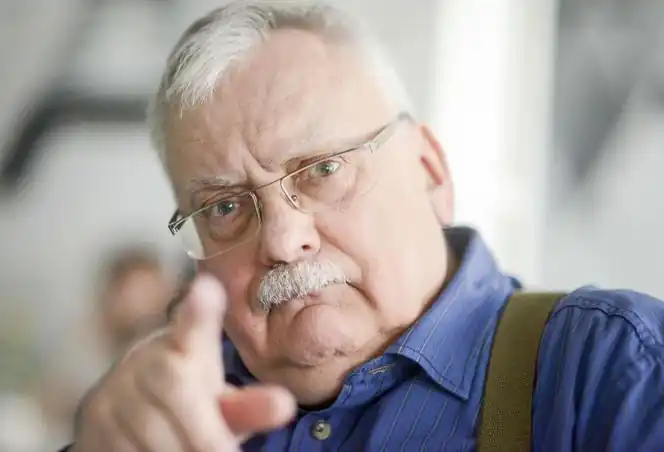

Анджей Сапковський (пол. Andrzej Sapkowski, *21 червня 1948, Лодзь, Польща) — польський письменник-фантаст і публіцист. Народився 1948 році в місті Лодзь, де й закінчив університет, факультет зовнішньої торгівлі. З 1972 по 1994 рік працював у торгівлі.
1986 року написав фентезійну новелу Відьмак, (польськ. Wiedźmin), у якій створив свого головного героя — відьмака Геральта із Рівії, майстра меча й магії, котрий за гроші вбиває монстрів і різноманітних міфічних створінь в своєму фентезійному світі. Перші чотири оповідання про відьмака були видані в книжці "Відьмак".
1990 року вийшла друга книга письменника, що складалася із семи оповідань (як нових, так і тих, що були видані раніше) під одним загальним заголовком "Останнє бажання", яка була перевидана 1993 року. 1992 року Сапковський видав нову книгу про відьмака — "Меч призначення", куди увійшли ще шість новел (перевидана у 1994 році). З 1994 по 1999 рр. створив п'ятитомну сагу про Відьмака та Відьмачку, яка принесла йому світове визнання: "Кров ельфів" (1994), "Час презирства" (1995), "Хрещення вогнем" (1996), "Вежа ластівки" (1997) і "Володарка озера" (1999). Пригоди Відьмака також були видані у вигляді шести коміксів (1993—1995) оформлених малюнками Богуслава Польха і з текстом Матея Паровського. Крім того, у 2001 році польською телестудією Heritage Films був знятий 13-серійний телесеріал "Відьмак" ("Wiedzmin") за мотивами збірок про Геральта "Меч призначення" і "Останнє бажання" (режисер Марек Бродскі). На основі серіалу також був створений 130-хвилинний телефільм. У 2004 році компанія "CD Project" почала роботу над багатообіцяючою RPG під назвою "Відьмак" ("The Witcher"), гра вийшла 24 жовтня 2007 року. 17 травня 2011 року виходить продовження гри про пригоди Геральта під назвою "Відьмак 2: Вбивці королів" ("The Witcher 2: Assassins of Kings"). Сапковский — автор сюжету книги-гри "Око Іррдеса" (польск. Oko Yrrhedesa), дуже популярної у Польщі. У 1995 році була видана книга "Світ короля Артура" — есе — в котрому автор намагався розібратися у причинах популярності легенд про короля Артура серед сучасних читачів і про вплив цих легенд на творчість деяких авторів XX-го століття. Книга включає також новелу "Maladie" — власну варіацію за мотивами легенди про Трістана та Ізольду. У 2001 році вийшла велика праця про міфологічних істот — "Rękopis znaleziony w Smoczej Jaskini" (Бестіарій), в якій з притаманним автору почуттям гумору відкривається світ створінь, що населяють наш світ і світи письменників фентезі. Серед заслуг автора також велика кількість критичних статей про фентезі і для тих, хто ним захоплюється, таких як "Посібник для початкових письменників фентезі", "Вареник, або немає золота в сірих горах" (стаття про сучасні проблеми фентезі, як літератури), "Меч, магія, екран" (про екранізації) і багато інших. Він вже закінчив роботу над своєю другою саґою — "Трилогією про Рейневана" ("Вежа блазнів", "Божі воїни", "Вічне світло", в якій річ йде про середньовічну Європу і Гуситські війни. 5 січня 2009 року була презентована нова книга письменника — "Змія", дії якої відбуваються під час війни в Афганістані. Сапковський отримав п'ять премій імені Януша Зейделя (три з них за оповідання Менше зло, Меч призначення і Вирва від бомби, а також дві за романи Кров ельфів і Вежа блазнів). А 1997 року письменник був удостоєний премії "Passport", що присуджується тижневиком "Polityka" за заслуги перед польською культурою. Крім того, у 2003 р. він виграв іспанську премію Ignotus, за кращу антологію (Останнє бажання), і Музиканти (краща іноземна розповідь), в тому ж році. Анджей Сапковський став першим лауреатом David Gemmell Legend Award. Нагорода дісталася письменнику за книжку "Blood of Elves" (англійське видання роману "Кров ельфів") і була вручена в 2009 році у Лондоні. Регулярно бере участь в Євроконах: в 2002 р. — в Четеборі (Чехія), в 2004 — в Пловдиві (Болгарія), в 2008 році — в Москві (Росія). А 13—16 квітня 2006 р. брав участь в європейському конгресі наукової фантастики Єврокон у Києві. Книги автора перекладено на англійську, німецьку, французьку, іспанську, португальську, італійську, чеську, литовську, болгарську, російську та українську мови. В одній лише Польщі продано близько 2-х млн. примірників його книг.